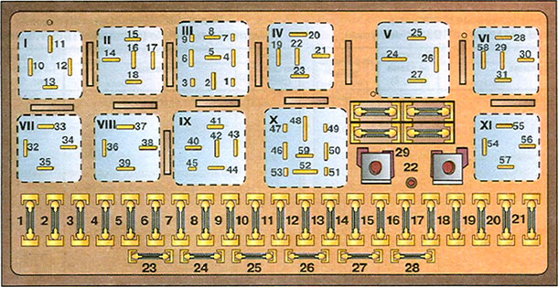

Пневмопривод ЦЗ в передних дверях, контактная группа из 3-х контактов. 2-й контакт (средний) идет на плату управления в багажнике. 3-й контакт (левый) соединен с землей, 1-й (правый) - с +12в. Взависимости от того, открывается или закрывается замок, подается соответствующее напряжение на центральный контакт. В открытом состоянии правая часть замкнута на центр, в закрытом - левая. Т.е. при открытии двери ключом, на 2-й контакт от 1-го должен подаваться "+".
Судя по схемам, "+" для активаторов берется напрямую с предохранителя. На B3 это 19 номер:
